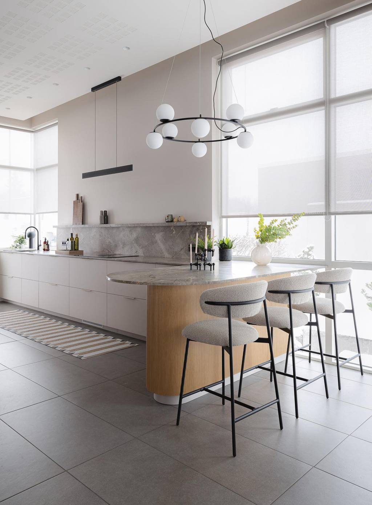
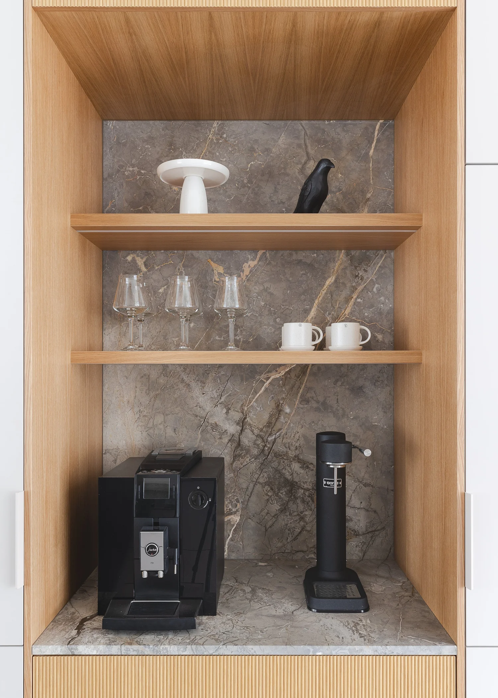
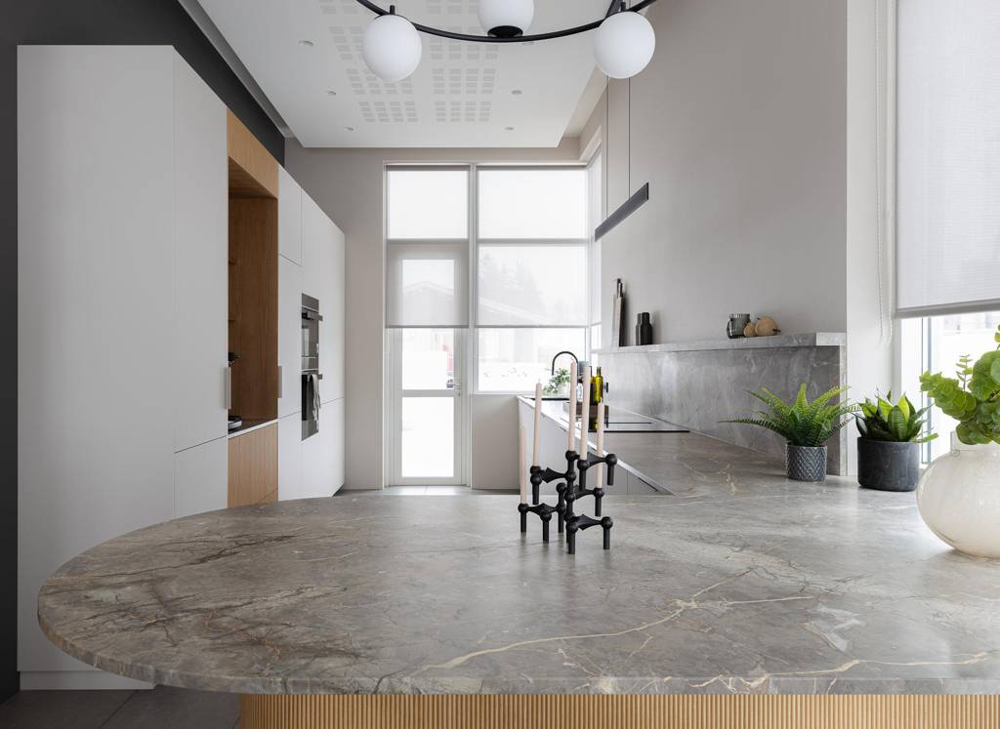

Eldhús í Mosfellsbæ
Langt og mjótt eldhús þar sem bogadreginn tangi kom í staðinn fyrir eyju — klassísk hönnun og praktík í senn, með marmara sem flæðir upp á veggi.
Rýmið var langt og mjótt og hefðbundin eyja hefði þrengt að því. Í staðinn var settur bogadreginn tangi við enda innréttingarinnar — fimm manneskjur geta setið við hann og hann tengir eldhúsið við garðinn og dagsbirtuna. Rifflaður eikarviður og ávöl form gera tangann að húsgagni frekar en innréttingu.
Marmarinn setur tóninn: hann liggur á borðflötum, heldur áfram sem heill bakveggur og flæðir upp á veggi inni í kaffihorninu sem prýðir innréttinguna. Hvítar sléttar hurðir halda heildinni rólegri en hlýjan kemur úr viðnum og látúnsdetaljum í tækjum og höldum.
Verkefnið var eitt af fyrstu verkum stofunnar og sameinar það sem eigendur báðu um: praktík hversdagsins og klassíska hönnun sem eldist vel.



